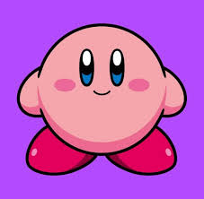

Kirby (星のカービィ Hoshi no Kābī?, lit. Kirby de las estrellas)
es una serie de videojuegos de acción y plataformas desarrollada por HAL Laboratory y
publicada por Nintendo.
La mayoría de los juegos de la serie son plataformas de desplazamiento lateral con elementos
de resolución de rompecabezas y lucha.
Kirby tiene la habilidad de
inhalar enemigos y objetos con la boca, escupiéndolos como proyectiles o comiéndolos. Si inhala a ciertos enemigos,
puede obtener sus poderes o propiedades, que se manifiestan como una nueva arma o potenciador llamado Habilidad de Copia.
